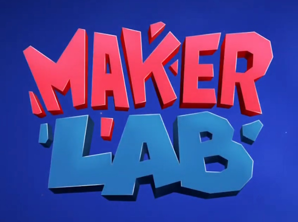

Description:
This game was created in partnership with the Casa Thomas Jefferson English school in Brasília to promote their Maker Space.
A mobile, online multiplayer game where the player must repair parts of a spaceship using tools from a maker space.
The game was published in Google Play Store and Apple App Store.
My Role:
Gameplay and Minigame Programmer
Tech:
Unity, C#, Photon Engine
Technical Highlights:
- Mobile and Online Multiplayer Game
- Photon PUN + Unity
- Multiple Minigames
- UI Animations and transitions